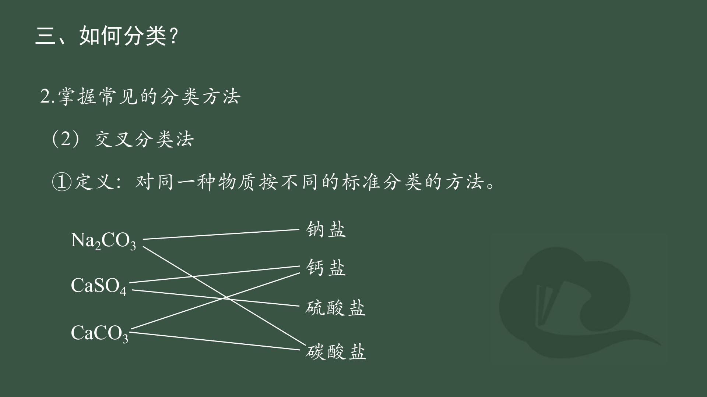

下方情境互动版可以直接打开；术语库和 CLI 导师需要运行本机课程服务。
进入可使用导师的课程 →按教材顺序，边学边判断
先唤醒初中知识，再看原课件图、示范与正反例。每个学习步骤另有三道考法练习，答完提炼知识点和记法；理由和导师点评都可选。
沿原图学习，再用练习检验理解
初中回顾、原图、正反例、示范和记忆卡都能自由阅读；每节另有三道原创题、可选 AI 导师、间隔复习与本机试卷复盘。内容仍待独立教师审校。
打开第一章短课 →同一种物质可以怎样分类？
从纯净物与混合物、单质与化合物出发，学树状/交叉分类、溶液与胶体、转化条件。
谁让溶液导电？
对照纯水、盐、酸、碱、糖和电解质水，区分物质类别、状态与可移动离子。
谁真正发生了反应？
写电离式、预测沉淀、气体与水，练习离子共存和离子方程式的写、拆、删、查。
电子怎样转移？
从初中得氧失氧回顾，走到化合价、氧化剂与还原剂、电子守恒和配平。
把卷子里连起来考的知识补完整
对照你提供的试卷，补酸式盐、离子共存、化合价、复分解制盐、离子式配平和 FeSO₄ 情境。先看必须记住的规则，再做原创迁移练习；无需开启导师。
进入试卷补漏课 →把知识用在陌生情境里
每题先读条件，再选一项并解释依据。提交后会看到每个选项的判断依据、完整推理和一个换条件的问题。训练题均为课程自编，页面标出所参考的考试院评析。
按教材顺序继续学习
从实验现象认识钠和氯，接着用物质的量连接粒子、质量与体积，最后完成定量配液。每单元都有初中回顾、正反例、解释追问和高考迁移。
相似的钠盐和氧化物，为何性质不同？
钠与水、Na₂O 与 Na₂O₂、碳酸钠与碳酸氢钠，用现象、化合价和条件判断。
氯气、氯水、氯离子是一回事吗？
列粒子、辨漂白原理和氯离子检验，联系生活中的含氯消毒剂。
怎样数看不见的粒子？
先说清计数对象，再在粒子数、质量、气体体积和方程式系数之间换算。
从称量到定容，误差在哪里？
用 c=n/V 理解最终溶液体积，逐步判断转移、温度和定容误差。
读条件、列证据、排干扰
以下题目为课程原创；链接说明教材与考试评价依据，不表示题目曾在高考原卷出现。
先把需要的基础接起来
每题先凭记忆判断。遇到忘记的概念，课程会解释并给一道更小的确认题；这一段不计入后面的高一成绩。
原子与离子
你来判断，课程来解析
先选择判断；写理由和请求导师点评都是可选的。
物质分类：原课件中的树状与交叉分类


电解质与非电解质：原课件课堂小结
离子反应：原课件知识结构
氧化还原：原课件知识结构
碳酸钠与碳酸氢钠：原课件比较图
氯水中的粒子：原课件关系图
物质的量：原课件公式关系
配制溶液：原课件实验步骤图
第一节先学：一棵分类树与两种分散系
先问有几种物质：理想纯水只含 H₂O，是纯净物；盐水含水和 NaCl，是混合物。纯净物再按元素组成分：O₂ 是单质，H₂O 是化合物。CO₂ 是氧化物，H₂SO₄ 虽含氧却不是氧化物。
两种分类法：树状分类逐级缩小范围；交叉分类让 Na₂CO₃ 同时属于钠盐和碳酸盐。换标准时须说明标准。
分散系：溶液、胶体、浊液按分散质粒子大小区分。Fe(OH)₃ 胶体能使光发生散射，形成丁达尔效应；普通 NaCl 水溶液没有这种可见光路。胶体制取条件与直接生成 Fe(OH)₃ 沉淀不同。
转化要看条件：CaO + H₂O → Ca(OH)₂，HCl + NaOH → NaCl + H₂O 都是具体反应；不能据此推出 CuO 与水也直接反应。
第一节补充：化学式表示物质，还是表示整杯溶液？
先确定分类对象：写 H₂SO₄、HNO₃、HCl、NH₃ 时，化学式指相应化合物；若题目给出的是它们与水形成的溶液，就要把水和溶质一起考虑。HCl 气体是纯净物，“盐酸”明确是 HCl 的水溶液，属于混合物。
| 纯物质 | 含水的样品 | 样品类别 |
|---|---|---|
| 硫酸 H₂SO₄ | 稀硫酸、硫酸溶液 | 混合物 |
| 氯化氢 HCl(g) | 盐酸 HCl(aq) | 混合物 |
| 硝酸 HNO₃ | 稀硝酸、浓硝酸（试剂） | 混合物 |
| 氨 NH₃(g) | 氨水 | 混合物 |
读题边界：单说“硫酸”或“硝酸”时，要看题目是在讨论化合物 H₂SO₄/HNO₃ 的类别，还是一瓶酸溶液、与金属反应的试剂；不能只凭名称断言整份样品的纯度。“浓”是浓度描述，不等于无水。
粒子与简写：盐酸中 HCl 在水里主要表现为 H₃O⁺（高中常简写 H⁺）和 Cl⁻。稀硫酸可有 H₃O⁺、HSO₄⁻、SO₄²⁻ 等。氨水是 NH₃ 溶于水的体系，存在 NH₃、H₂O、少量 NH₄⁺、OH⁻ 等；NH₃·H₂O 是中学常用的水合写法，不是整瓶氨水的唯一化学式。
自检：稀硫酸能用 H₂SO₄ 一个式子表示整瓶溶液吗？
不能。H₂SO₄ 表示硫酸这一化合物；稀硫酸还含水，是混合物。先看题目给的是化合物名称，还是“稀、浓、溶液、(aq)”所描述的样品。
先看水：纯水、自来水和盐水有什么不同？
导电需要能移动的带电粒子。水分子大多保持为 H₂O，极少量发生自电离：2H₂O ⇌ H₃O⁺ + OH⁻。因此理想纯水电导率很小，但严格说不是零。25 ℃下理论值约 0.055 μS/cm；普通课堂小灯泡通常不明显发亮，灵敏电导仪可以测到。
| 样品 | 主要看什么 | 判断 |
|---|---|---|
| 理想纯水 | 极少量 H₃O⁺、OH⁻ | 极弱导电，电导率不为零 |
| 蒸馏水 | 制备、保存时可能带入微量杂质或吸收 CO₂ | 很低，但不等同于理想纯水 |
| 自来水 | 还含有溶解的矿物离子 | 电导率随水源和处理情况变化 |
| NaCl 水溶液 | 另有较多可移动的 Na⁺、Cl⁻ | 在本课条件下明显导电 |
读题关键：“灯泡不亮”表示这个装置未观察到明显电流，不能改写成“电导率＝0”。比较电导率时还要留意温度与溶液组成。
真题关联：2011 年山东卷化学第 31 题涉及用电导率或电阻率检验蒸馏水纯度；这里的判断题是课程改编题。进阶到水的离子积和 pH 计算时，再处理定量关系。依据：2011 山东卷试题转载、NIST 纯水电导率资料。
生活问题：运动后都需要电解质水吗？糖又是什么？
汗液主要是水，也带走 Na⁺、Cl⁻ 和较少的 K⁺。饮料标签上的“电解质”通常指溶解在水中的离子；整瓶饮料是混合物。这里说的“糖”不是一种固定化学式，而是要看具体配料：
| 饮料中可能出现的糖 | 分子式与组成 | 溶于水以后 |
|---|---|---|
| 蔗糖（常见食糖） | C₁₂H₂₂O₁₁；含碳、氢、氧 | 主要是中性蔗糖分子 |
| 葡萄糖 | C₆H₁₂O₆；含碳、氢、氧 | 主要是中性葡萄糖分子 |
| 果糖 | C₆H₁₂O₆；与葡萄糖结构不同 | 主要是中性果糖分子 |
为什么蔗糖的式子不同？它可以理解为葡萄糖与果糖两个单糖单元结合时脱去一分子水：C₆H₁₂O₆ + C₆H₁₂O₆ − H₂O = C₁₂H₂₂O₁₁。
关键区别：葡萄糖等糖可经人体代谢提供能量；糖溶解后主要仍是中性分子。NaCl、KCl 则能在水中提供可移动离子。若一瓶含糖饮料能导电，可能是其中的盐类提供了离子，不能直接说“糖让它导电”。
怎么判断需要什么？短时间普通运动通常喝水即可。炎热环境下长时间、大量出汗时，补水之外可能需要补回钠等电解质；需求因出汗量、饮食和环境而异。饮料不是给身体像电池一样“充电”。
先看：怎样判断沉淀，哪些需要记？
混合溶液时先列离子，再考虑可能的新组合及其溶解性。例如 BaCl₂ 与 Na₂SO₄ 提供 Ba²⁺、Cl⁻、Na⁺、SO₄²⁻：BaSO₄ 难溶，NaCl 可溶，因此 BaSO₄ 析出。
| 先记的规律 | 典型例子 |
|---|---|
| 钠、钾、铵盐和硝酸盐通常可溶 | NaCl、KNO₃、NaNO₃ 留在溶液中 |
| 多数氯化物可溶，AgCl 是常见难溶例外 | Ag⁺＋Cl⁻ → AgCl↓ |
| 多数硫酸盐可溶，BaSO₄ 是常见难溶例外 | Ba²⁺＋SO₄²⁻ → BaSO₄↓ |
| 多数碳酸盐难溶，钠、钾、铵盐通常可溶 | Ca²⁺＋CO₃²⁻ → CaCO₃↓ |
需要背吗？先记规律和高频例外，不用一次背完整表。这样才能预测产物、判断离子方程式中哪些物质不拆，以及哪些离子不能大量共存。微溶或少见物质再查表。
难溶不等于完全不溶；实际是否析出还与离子浓度等条件有关。本课按常见课堂实验条件判断。
第二节先学：电离、反应条件与写式
电离：Na₂SO₄ → 2Na⁺ + SO₄²⁻；CaCl₂ → Ca²⁺ + 2Cl⁻。先核对离子电荷与个数。盐酸中的 HCl 能电离，蔗糖溶解后主要仍为中性分子。
反应条件：离子重新组合形成沉淀、气体或水等弱电解质，才可能出现净离子反应。Na₂CO₃ 遇酸：CO₃²⁻ + 2H⁺ → CO₂↑ + H₂O。酸性条件下 CO₃²⁻ 不能大量存在；碱性条件下 H⁺ 不能大量存在。
写、拆、删、查：先配平化学方程式；水溶液中可溶性强电解质拆成离子，沉淀、气体、水和弱酸保留化学式；删去两侧相同的旁观离子；检查原子、电荷和真实反应。
高考如何把“难溶”与电导率连起来？
2023 年广东卷化学第 17 题第（4）问以 AgCl 饱和溶液为情境，让考生分析电导率、离子浓度和温度。由此可见，“AgCl 难溶”不等于“溶液中一个离子都没有”。
本课改编判断：两份 AgCl 饱和溶液的电导率不同，仅凭数值大小就能断定哪一份溶解的 AgCl 更多吗？先检查测量温度是否相同；温度也会影响离子迁移与电导率。这里先学控制变量，不提前要求溶度积计算。
来源：2023 广东卷试题转载，第 17 题。上面的判断题为课程改编，不是真题原文。
第三节先学：升失氧，降得还
初中学过“得氧、失氧”，高中要看化合价变化：Zn + Cu²⁺ → Zn²⁺ + Cu 中，Zn 从 0 到 +2，失去 2e⁻，被氧化，是还原剂；Cu 从 +2 到 0，得到 2e⁻，被还原，是氧化剂。Zn²⁺ 是氧化产物，Cu 是还原产物。
判断步骤：先标变价元素，再算升降与参与原子数，确认得失电子数相等；最后配平全部元素并检查电荷。2FeCl₂ + Cl₂ → 2FeCl₃ 中，两个 Fe²⁺ 共失 2e⁻，Cl₂ 共得 2e⁻。
常见陷阱：2Na + Cl₂ → 2NaCl 不含氧却是氧化还原；CaO 加水是化合反应却不是氧化还原；BaSO₄ 沉淀生成是离子反应，化合价不变。题目给反应能发生时才据此比较氧化性强弱。
钠先学：从水中现象到两组易混物质
初中衔接：金属与水反应要判断新物质。少量 Na 与足量水反应：2Na + 2H₂O → 2NaOH + H₂↑；钠浮在水面、熔成小球并移动，气泡是 H₂，滴酚酞变红对应碱性产物 NaOH。实验只能在教师规范条件下进行。
氧化物比较：Na₂O 中氧为 −2 价，Na₂O₂ 中氧为 −1 价。Na₂O + H₂O → 2NaOH；2Na₂O₂ + 2H₂O → 4NaOH + O₂↑。同样含钠和氧，不代表反应与氧化还原情况相同。
两种白色盐：Na₂CO₃ 是碳酸钠，NaHCO₃ 是碳酸氢钠。2NaHCO₃ 受热可生成 Na₂CO₃ + CO₂↑ + H₂O；不能把这个现象直接套给普通加热条件下的 Na₂CO₃。判断题先核化学式、条件和产物。
氯先学：海水里的氯与氯水中的氯
粒子先分清：海水中的氯主要以 Cl⁻ 等氯化物形式存在，不是黄绿色 Cl₂。HCl 气体溶于水形成盐酸；HCl(aq) 表示水溶液。新制氯水是 Cl₂ 溶于水并与水反应后的混合物。
关键反应：Cl₂ + H₂O ⇌ HCl + HClO。HClO 是弱酸，具有氧化性，与新制氯水漂白有关；光照下可分解，所以新制和久置氯水不能直接等同。Cl₂ + 2NaOH → NaCl + NaClO + H₂O；84 消毒液通常以 NaClO 体系为有效成分。它与酸性洁厕剂不能混用，可能放出有毒氯气。
实验读题：检验 Cl⁻ 时可用稀硝酸酸化后加 AgNO₃，看不溶于稀硝酸的白色 AgCl；若先用盐酸酸化，就引入了待检 Cl⁻。任何颜色、沉淀结论都要检查试剂带来的干扰。
物质的量先学：先说粒子，再带单位计算
mol 是物质的量单位：1 mol 指约 6.02×10²³ 个指定基本粒子，要说明是 O 原子、O₂ 分子还是 NaCl 化学式单位。1 mol O₂ 分子含 2 mol O 原子；NaCl 晶体不能说由独立 NaCl 分子组成。
两座桥：N=nNₐ，其中 Nₐ≈6.02×10²³ mol⁻¹；n=m/M，例如 M(H₂O)≈18 g·mol⁻¹，18 g 水约 1 mol。相对分子质量没有单位，摩尔质量有单位。方程式系数表示粒子数或物质的量比，不能直接当质量比。
体积有条件：约 0 ℃、101.325 kPa 的标准状况下，1 mol 理想气体体积约 22.4 L。25 ℃ 常压不能直接套该数值，标准状况下的液态水也不能套气体公式。
配液先学：c=n/V 中的 V 是最终溶液体积
配制 500 mL、0.200 mol·L⁻¹ NaCl 溶液，需 n=cV=0.100 mol，理论称量约 5.85 g。这里是把溶质配成最终 500 mL 溶液，不是加到 500 mL 水里。
实验路径：计算与称量 → 烧杯中溶解 → 冷却 → 定量转移并洗涤烧杯和玻璃棒 → 容量瓶定容 → 摇匀。接近刻度时逐滴加水，平视凹液面最低处。容量瓶不用于直接溶解固体或加热。
误差方法：只看 c=n/V：转移时洒出溶液使 n 下降，浓度偏低；定容过线使 V 增大，浓度偏低；在无挥发、受热膨胀前提下热时定容，冷却后 V 缩小，浓度可能偏高。洗涤液合并后仍定容到刻度不会因为“多加了洗涤水”就必然偏低。
干燥 NaCl 晶体
你的判断是什么？
还想追问导师？
每一步都练三题
三题是课程根据原卷考法设计的判断练习，不是原题。每题作答后看考点、该记的规则，再做一道新情境判断；三题完成后提炼本步知识与记法。可自由切换步骤。
查看其他物质例子
| 物质 | 关键提示 |
|---|---|
| CaCl₂(aq) | 看 Ca²⁺ 与 Cl⁻ 能否移动 |
| Na₂SO₄(aq) | 看 Na⁺ 与 SO₄²⁻ 能否移动 |
| 熔融 NaCl | 不加水，状态也已变化 |
| 醋酸水溶液 | 部分电离，导电较弱 |
| 蔗糖 C₁₂H₂₂O₁₁ 水溶液 | 溶解后主要是中性分子 |
| 葡萄糖 C₆H₁₂O₆ 水溶液 | 不同的糖，同样不产生大量离子 |